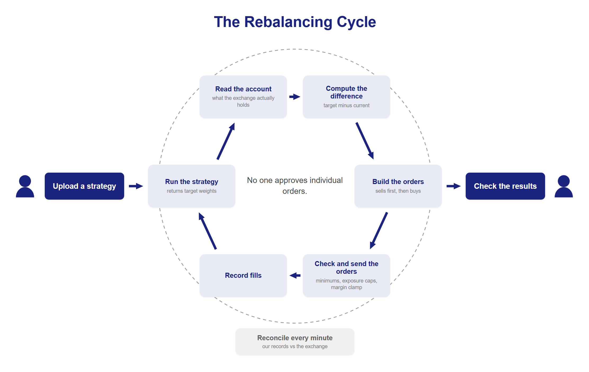

Forty-five minutes of orders nobody approved cost Knight Capital more than $460 million. We run one where nobody approves orders either.
One morning in August 2012, Knight Capital's automated order router turned 212 small retail orders into 4 million executions in about 45 minutes, and the firm lost more than $460 million. Nobody at Knight approved any of it.
We run a trading system where no one approves individual orders either. We're Axiom, the NeoMatrix team that builds and runs it, and this blog is where we write down what stands between our system and a morning like Knight's.
The New York Stock Exchange floor in 1963, when people carried the orders. Photo: Thomas J. O'Halloran, U.S. News & World Report, Library of Congress, via Wikimedia Commons, public domain.

What Runs Instead of an Approver
A user uploads a strategy as code. A strategy is code that answers one question: what should this account be holding right now, and how much of it? The answer looks something like 40% Bitcoin, 30% Ethereum, the rest in cash. Many strategies can run side by side, and the system adds their answers up into one target for the account.
From there the system takes over. On a fixed schedule, it runs the strategy and gets back the target weights, checks the exchange for what the account actually holds right now, and if the two don't match, builds orders to close the gap: closing trades first, so there's cash and margin on hand, then new ones with whatever that frees up.
Nobody approves individual orders, but every order passes automated checks before it goes out. Sizes get rounded down to the increments the exchange accepts, and a new position too small to meet the exchange's minimum is skipped rather than sent. Exposure is capped in two places: a strategy that asks for more than it declared gets scaled back, and the account's own limit is applied before anything is sent. On futures that limit is overall margin use, which is clamped. On spot there is no margin, so spending is capped at the cash the account holds. On futures, if a cycle's opening orders together would need more margin than the account has, they are held back, and the orders that close positions go out first as reduce-only orders. That margin clamp is a brake Knight did not have: a limit on total exposure that applies before the order leaves, without anyone looking at a screen. Each order carries an ID built from the cycle, the symbol and the direction, so every order can be traced back to the cycle that sent it. What keeps an order from going out twice is the sizing: each cycle sends only the gap between the target and what the exchange reports right now, so a repeated cycle has nothing new to send once the gap is closed. That property is called idempotence. Orders go out as market orders, so the limits that protect us are on size and margin, not on price. Anything the exchange refuses, such as an order the balance can't cover, is recorded, and a failure that needs a person is raised as an alert.
Losses have a limit too. A strategy or portfolio can carry a drawdown limit, and when it's crossed the system stops it automatically and closes its exposure on the next cycle. After that the fills get recorded, and from then on the account gets checked again every minute so what we think is true still matches reality. All of it runs continuously, for every user at once, and in normal operation a person only touches two parts of it: uploading the strategy, and checking the results afterward. A strategy that was stopped stays stopped until a person switches it back on.

The Failure We Fear Most
The SEC traced Knight's morning to a deployment: a technician copied new code to seven of the firm's eight servers and missed the eighth. The new code reused a flag that used to switch on an old function called Power Peg, which Knight had stopped using years earlier but never deleted. On the eighth server, the flag woke it up. It was not a crash. The router kept running exactly as written, on the wrong instructions, and the warning was in people's inboxes before the market opened. A little after 8 a.m., an internal system began emailing errors that read "Power Peg disabled", 97 of them before the open. The firm had not designed those messages to be alerts, and people generally didn't read them. Google's SRE book puts the standard in one line: every page should be actionable. Those 97 emails were true, and nobody was expected to act on them.
Knight did have risk controls, but they were the kind a person has to watch. Its position monitor was a screen, not a brake: it was never wired to order entry, and the firm had no pre-set capital limit that would stop new orders by itself. The market access rule the SEC adopted in 2010 requires exactly that kind of automated limit.
That is the failure we fear most, and going in we hadn't braced for it. Crashes we could handle. A crash at least tells you where it died. The bad one shows up nowhere: no exception, nothing in the logs, the screen showing the same kind of number it always shows, except this time the number is wrong.
We watched this happen once. A query came back with an empty list, no error, and the cleanup process reading that result decided every running session had been abandoned and shut them all down.
The battle-tested quant libraries were mostly built for equities: markets close overnight, there's no trading on weekends, returns get annualized on trading days, order sizes are whole shares. One of them, empyrical, sets a year to 252 business days. None of that applies to crypto, and none of it is written down anywhere as "this is a stock-market assumption." It's baked into the code, and it doesn't fail loudly. It quietly produces the wrong number.
Run the same strategy against historical data and against a real account and, left alone, the two never agree. Execution researchers have called the gap between a paper portfolio and the real one the implementation shortfall since André Perold named it in 1988. Fill timing, fees, slippage, an indicator's warm-up window, minimum order size: get any one of these wrong and the backtest can drift from reality in either direction. Many of these mismatches make the backtest look better than live trading, which can make them harder to notice. Closing that gap is close to half the job.
What We'll Write Down
Each post covers one real incident, told roughly the way it unfolded for us: something broke, we didn't immediately know why, we tried a few things that didn't work, and eventually we found the actual cause. If something is still unresolved when we publish, we say so instead of rounding up to a clean ending. The decisions we reversed and the wrong guesses we made stay in the writeup, because that's usually the part someone hitting the same problem later can use.
The system breaks into a handful of layers, and each one has accumulated its own kind of problem. Roughly in this order:
- The live trading engine: the core piece that runs strategies and sends orders. It started as a handful of processes on one server; today it's Kubernetes jobs, one per user session per cycle, and we'll get into why that changed and what broke along the way.
- The backtest engine. We took an open-source backtester and adapted it to crypto, and enough problems stacked up that we built our own instead. We'll get into what those problems were.
- Every exchange has its own order format, error codes, and fee handling, and the exchange integration layer hides most of that so little above it has to think about which exchange it's talking to.
- The data pipeline, where market data and indicators live. Live trading and backtesting need to see the same data, and any gap that opens up has to get backfilled later.
- Results and metrics: the layer that computes what was made and how much risk it took, and the easiest place for a calculation to go quietly wrong.
- Deploys, monitoring, and what happens when something breaks at 3am, all under operations and incident response.
Knight had the signals: emails, a screen full of growing positions, people watching. What it lacked was a control that turned those signals into a stop. That is the standard we hold our own system to, and the rest of this blog is the record of how close we get. Real cases for each layer, none of which felt interesting while we were living through them, starting with the next post.